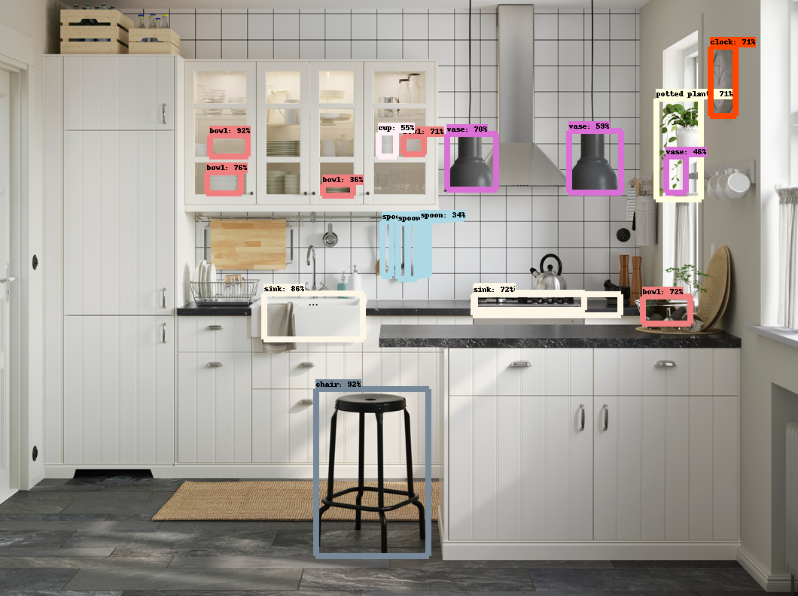
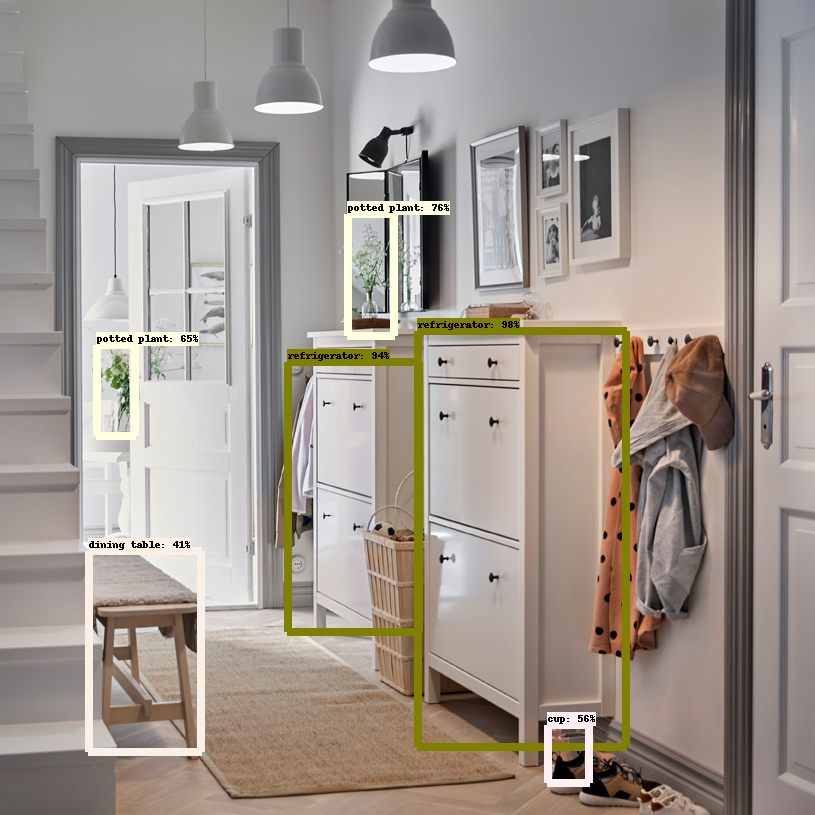

Problem Definition
The goal of this project is to use artificial intelligence algorithms/models, e.g., neural networks, to recognize and locate objects, here, IKEA products, in images of indoor scenes from "IKEA galleries." We are provided with sample photos of objects that are known to be in the scene as guidance for our recognition system. We should match as many objects as possible among the provided objects with their equivalent objects in the scene.
Background
Object detection in computer vision refers to the labelling of semantic
objects belonging to certain predefined set of classes, in videos and
images, using techniques of machine learning. With the rise in
application of computer vision techniques in autonomous vehicles and
video surveillance, fast and accurate detection of objects in videos has
become very important. There are a number of challenges in approaching
this problem. One is the variable number of objects in each video frame.
Second is the variability in size of the object in the image.
Traditionally, image classification was used for object detection, but
more recently, deep learning has proved to be better. Initial attempts
at use of deep learning in object detection involved the R-CNNs (Regions
with CNN Features) and Fast R-CNN, in which multiple neural networks
are used. Further research has led to the development of techniques like
YOLO, which apply a single neural network to the entire image, leading
to faster object detection. An improvement on YOLO brought us the
SSD (Single-shot Multibox Detector), which applies a single neural
network to the entire image, and simultaneously predicts the bounding box
and the class as it processes the image. This method imprtoves the
run time of the process, but it couldn't give a better accuracy than
Faster R-CNN in our case.
Region-based Convolutional Neural Network(R-CNN) : In R-CNNs, the
input image is scanned and possible regions with objects are proposed.
Then CNNs are used on the regions proposed to find the features and then
SVM is used to find the type/class of objects.
Faster R-CNNs: This method is a modification of R-CNNs to make it
faster by improving the region proposal algorithm. Also, instead of
SVMs, a softmax layer is added to the top of CNN for classification.
Method and Implementation
Note: You may visit our GitHub repository to look at our code.
(1) We used 5 different models to solve the problem, all of them are pre-trained on the COCO dataset. Thus there are 90 classes for our output.
The models we used are as follows-
- ssd_mobilenet_v1 module
- ssd_inception_v2 module
- faster_rcnn_resnet101 module
- faster_rcnn_inception_resnet_v2_atrous module
- faster_rcnn_nas module
(2) Construction of the code: We applied a pre-trained model based on the COCO dataset to do the object detection. The code implements the following steps-
- Import all the necessary dependencies
- Link the pre-trained models from the path
- Load one of the models into our program
- Load the labels we need. Since the pre-trained models are trained on the COCO dataset, we have 90 classes
- Load images into numpy arrays and map the classes
- Load the test images for validation and save the images to visualize the results
Challenges
- The objects in the scene may have orientations and sizes different from those in the sample photos, and they can be anywhere in the scene.
- The objects may be partly occluded or clustered together.
- Other challenges may be shadows, similar colors or patterns, transparency (glasses, mirrors), low contrast, low resolution, etc.
Results
Per Image Stats for Different Models that we used are as follows-
| Stats/Model | MOBILENET | INCEPTIONNET | RCNN_INCEPTION_RESNET | FASTER_RCNN |
|---|---|---|---|---|
| Detection Time | ~180ms | ~250ms | ~24ms | ~40ms |
| Model Size | ~30 MB | ~100 MB | ~250 MB | ~600 MB |
The validation result images are as shown below-


Conclusions
What are the strengths and weaknesses of our method?
- Strength - Faster, more accurate and simpler method for multiple object detection especially when the dataset provided is sparse
- Weakness - The detection does not perform well when the object is poorly oriented or when many objects are cluttered with one another
Credits and Bibliography
[1] Joyce Xu, Deep Learning for Object Detection: A Comprehensive Review,
Sep 2017.
https://towardsdatascience.com/deep-learning-for-object-detection-a-comprehensive-review-73930816d8d9,`
Accessed Nov 2017
[2] https://docs.opencv.org/trunk/dd/d6a/classcv_1_1KalmanFilter.html
[3] Liu W. et al. (2016) SSD: Single Shot MultiBox Detector. In: Leibe
B., Matas J., Sebe N., Welling M. (eds) Computer Vision – ECCV 2016.
ECCV 2016. Lecture Notes in Computer Science, vol 9905. Springer, Cham
(arXiv:1512.02325v5)
[4] Redmon, Joseph & Divvala, Santosh & Girshick, Ross &
Farhadi, Ali. (2015). You Only Look Once: Unified, Real-Time Object
Detection. (arXiv:1709.05943v1)
[5] Shaoqing Ren, Kaiming He, Ross Girshick, Jian Sun (2015) Faster
R-CNN: Towards Real-Time Object Detection with Region Proposal Networks.
(arXiv:1506.01497v3)
[6] The PASCAL Visual Object Classes Challenge: A Retrospective.
Everingham, M., Eslami, S. M. A., Van Gool, L., Williams, C. K. I.,
Winn, J. and Zisserman, A. International Journal of Computer Vision,
111(1), 98-136, 2015
[7] COCO: Common Objects in Context. http://mscoco.org/dataset/#detections-leaderboard (2016) [Online; accessed 25-July-2016].
[8] Olga Russakovsky*, Jia Deng*, Hao Su, Jonathan Krause, Sanjeev
Satheesh, Sean Ma, Zhiheng Huang, Andrej Karpathy, Aditya Khosla,
Michael Bernstein, Alexander C. Berg and Li Fei-Fei. (* = equal
contribution) ImageNet Large Scale Visual Recognition Challenge. IJCV,
2015.